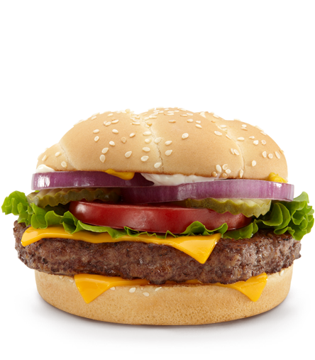
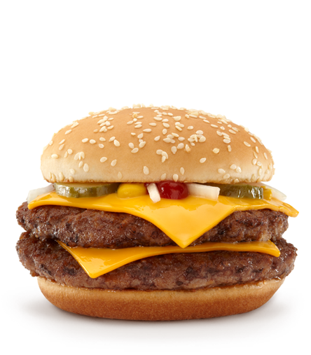
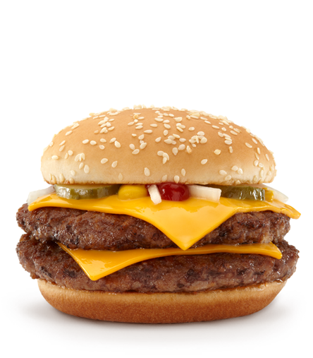
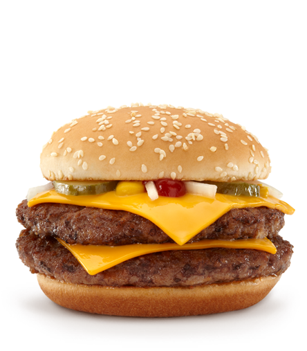
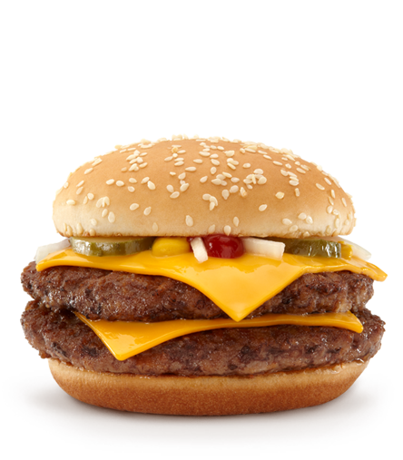

 


Kitchen Sink Demo
This example shows a few of the methods and transition for the slideshow. Check the demo.js file to see how it's all done. It's a really easy widget to control.

This example shows a few of the methods and transition for the slideshow. Check the demo.js file to see how it's all done. It's a really easy widget to control.